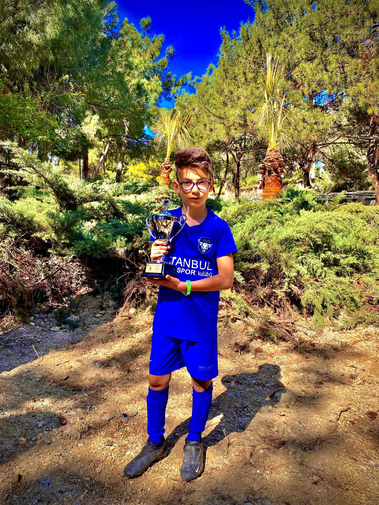
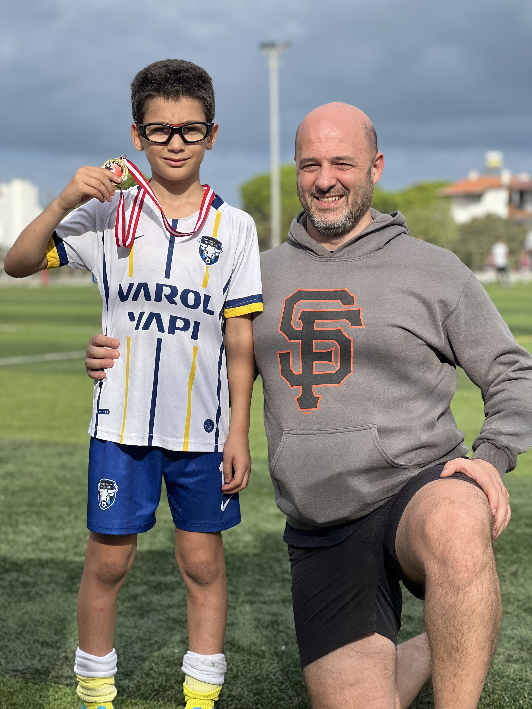
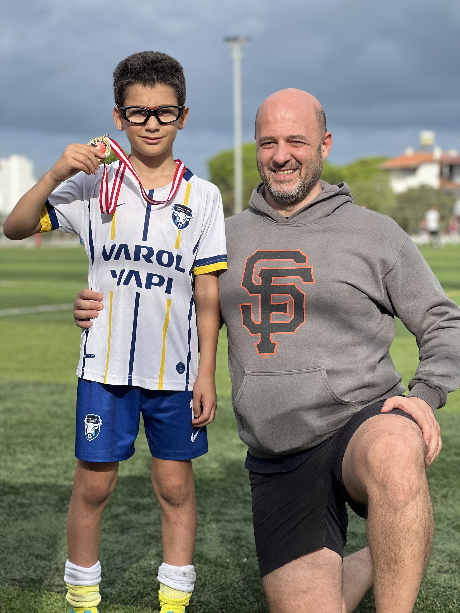

Benim Hakkımda
Merhaba, benim adım Batu Ilgaç. Şu anda 9 yaşındayım ve futbol oynamak benim için vazgeçilmez bir tutkudur. Başakspor'un U-10 takımında forma giyiyorum ve son maçta attığım frikikle bir hayli dikkat çekmiş olabilirim. Neyse ki, o frikiği direkten döndü, ama bir sonraki sefere umarım golle sonuçlanır!

 
Aslında futbol kariyerime Fenerbahçe'nin altyapısında başladım. Ancak bir süre sonra, yeni bir macera arayışı içinde Başakspor'a transfer oldum. Burada, kendimi daha da geliştirmek ve farklı bir futbol deneyimi yaşamak istedim. Fenerbahçe'nin altyapısından ayrılmak zor oldu, ancak Başakspor'da yeni arkadaşlar edinmek ve yeni hedeflere koşmak beni heyecanlandırıyor.
Başakspor formasıyla sahada 18 numarayı taşıyorum. Bu benim için gerçekten özel bir sayı çünkü genellikle takımın önemli oyuncularına verilen bir numara. Her maçta bu formayı giydiğimde, takımım için elimden gelenin en iyisini yapmaya çalışıyorum. Sahada olmak ve futbol oynamak beni gerçekten mutlu ediyor.
Takımımızla birlikte iki kez Kuşadası'na gitme şansı bulduk ve her iki seferinde de büyük zaferlere imza attık.

Aslında futbol kariyerime Fenerbahçe'nin altyapısında başladım. Ancak bir süre sonra, yeni bir macera arayışı içinde Başakspor'a transfer oldum. Burada, kendimi daha da geliştirmek ve farklı bir futbol deneyimi yaşamak istedim. Fenerbahçe'nin altyapısından ayrılmak zor oldu, ancak Başakspor'da yeni arkadaşlar edinmek ve yeni hedeflere koşmak beni heyecanlandırıyor.
Başakspor formasıyla sahada 18 numarayı taşıyorum. Bu benim için gerçekten özel bir sayı çünkü genellikle takımın önemli oyuncularına verilen bir numara. Her maçta bu formayı giydiğimde, takımım için elimden gelenin en iyisini yapmaya çalışıyorum. Sahada olmak ve futbol oynamak beni gerçekten mutlu ediyor.
Takımımızla birlikte iki kez Kuşadası'na gitme şansı bulduk ve her iki seferinde de büyük zaferlere imza attık.
İlk ziyaretimizde, Kuşadası'nda düzenlenen bir turnuvaya katıldık. Takım arkadaşlarımla birlikte zorlu mücadelelerden geçtik, ancak dayanışma ve kararlılıkla turnuvayı birincilikle tamamladık. Kuşadası'nın güzel atmosferinde, takım ruhumuzun zirveye çıktığı bir zafer elde ettik. İkinci Kuşadası ziyaretimizde de aynı heyecanı yaşadık. Önceki zaferin bize kattığı motivasyonla, daha sıkı antrenmanlar yapıp birlikte çalışmanın gücünü hissettik. Bu sefer de turnuvada gösterdiğimiz performansla birinci olmayı başardık. İki zafer de benim için unutulmaz anılardı ve futbol kariyerimdeki başarılarımın önemli bir parçasıydı.
zaferler, sadece sahada değil, aynı zamanda dış sahalarda bir arada olmanın, arkadaşlık ve takım ruhunun ne kadar önemli olduğunu gösterdi. Futbol, sadece topun olduğu yeşil sahalarda değil, aynı zamanda birlikte geçirilen özel anlarda da anlam kazanıyor..Gelecekte büyük bir futbolcu olma hayaliyle yaşıyorum. Umarım bir gün Beşiktaş'ın A Takımı'nda veya belki de daha büyük bir takımda oynama şansı bulurum. Ama şu anki odak noktam, her antrenmanda ve maçta kendimi geliştirip takımıma en iyi şekilde katkıda bulunmak. Belki bir gün bu satırları okuyanlar, adımı daha da fazla duyar ve "Batu Ilgaç" dediklerinde futbolu hatırlarlar.